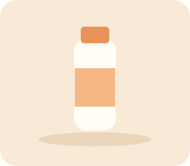
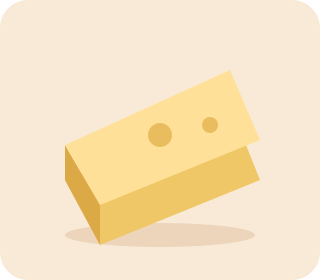

1 litro
Leite Integral Artesanal
Fresco e cheio de sabor para acompanhar seu dia.
R$ 7,90
Os pequenos prazeres começam com bons ingredientes. Conheça os laticínios artesanais da LatMais.
Conheça nossos produtos →Tradição familiar · Cuidado em cada detalhe

Mais sabor.Três formas de levar um pouco do campo para casa.

Fresco e cheio de sabor para acompanhar seu dia.
Sabor marcante e textura que lembra a mesa da família.
Cremosa, delicada e perfeita para o pão quentinho.
A LatMais é uma empresa familiar fictícia de laticínios artesanais, criada para este projeto escolar. Nossa proposta une tradição, qualidade e uma forma mais simples de conectar a empresa aos seus clientes.